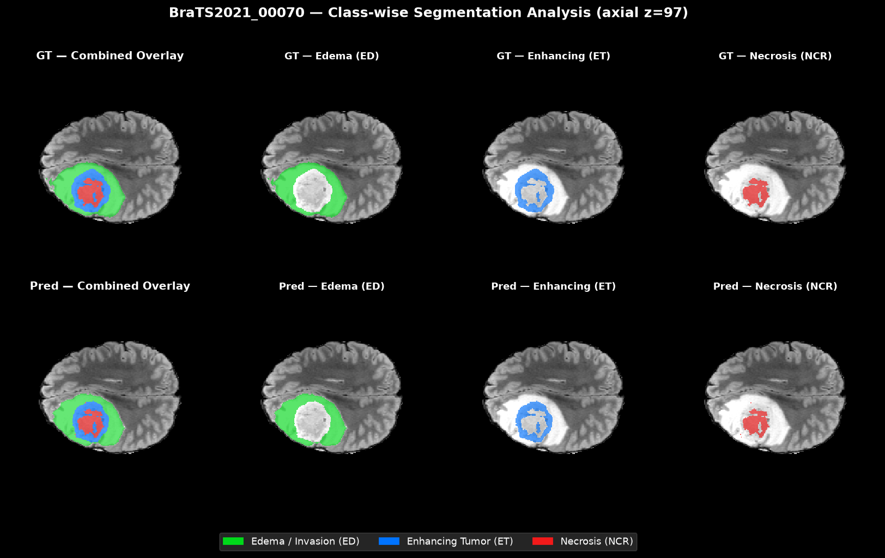
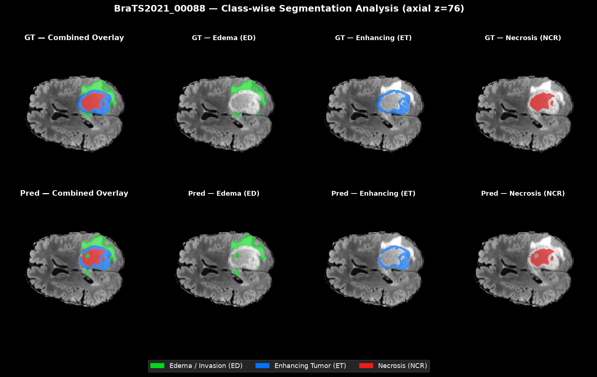
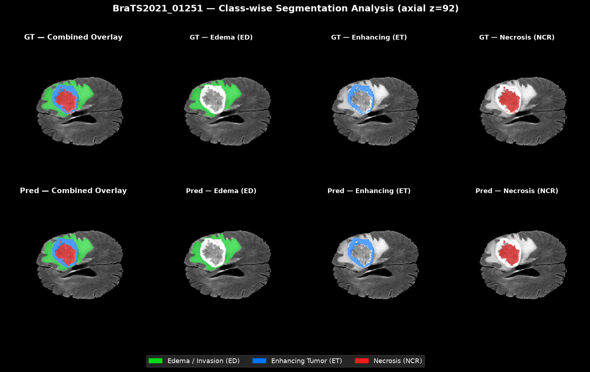
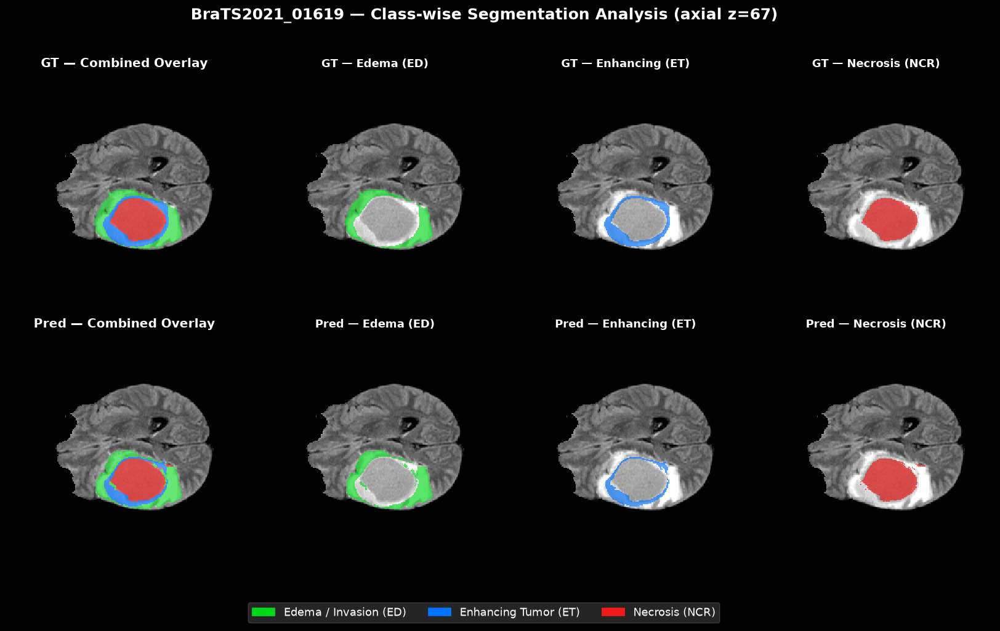

Density-seeded statistical modeling
We initialize GMM-EM with deterministic kernel-density peaks rather than random initialization, K-means, or FCM. This gives the optimization a reproducible starting point.
Research paper

MRI is essential for clinical triage, yet supervised deep learning is bottlenecked by scarce expert annotations, while classical unsupervised methods can be sensitive to initialization and have weak spatial constraints.
We propose StaGra, a training-free unsupervised framework that integrates density-scaled statistical modeling with 3D spatial regularization. Following a preliminary tumor localization, StaGra initializes multi-parametric Gaussian Mixture Models at kernel density peaks for reproducible starting points, then minimizes a pairwise Markov Random Field energy using 3D expansion Graph Cuts.
Evaluation on the BraTS 2021 benchmark yields Dice similarity coefficients of 78.4%, 49.2%, and 53.4% for whole tumor, tumor core, and enhancing tumor regions, respectively. The method runs on standard CPUs and is intended for pseudo-label generation and coarse tumor localization in data-scarce settings.
We initialize GMM-EM with deterministic kernel-density peaks rather than random initialization, K-means, or FCM. This gives the optimization a reproducible starting point.
We minimize a pairwise MRF energy with alpha-expansion Graph Cut in a fully unsupervised volumetric setting. The contrast-sensitive pairwise term limits smoothing across intensity edges, preserving infiltrative borders while maintaining 3D coherence.



1,151 unseen BraTS 2021 test subjects (validation cases excluded)
| Region | Dice | HD95 (mm) |
|---|---|---|
| Whole tumor | 78.4% | 15.2 |
| Tumor core | 49.2% | 18.2 |
| Enhancing tumor | 53.4% | 15.4 |
@xxxxxxx{xxxxxxxxx,
title = {MRI Segmentation via Training-Free Statistical-Graph Framework},
author = {Bui, Thanh-Tin and Mai, Hoang-Hiep and Tran, Van-Duc and Nguyen Van, Anh-Khoa
and Nguyen, Duy Tam and Nguyen Khanh, Loi},
year = {2026}
}